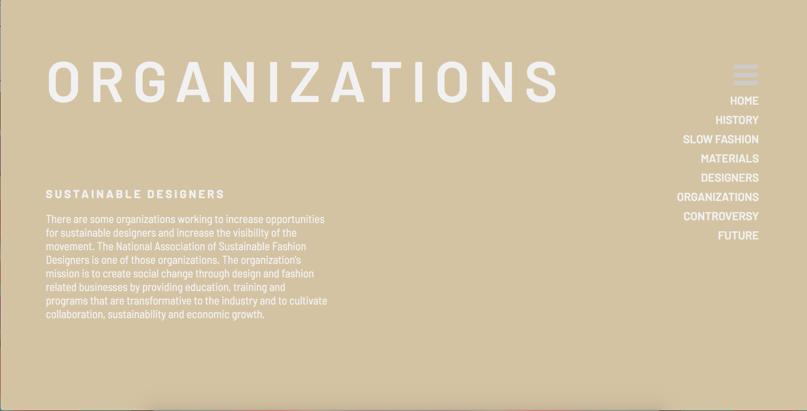
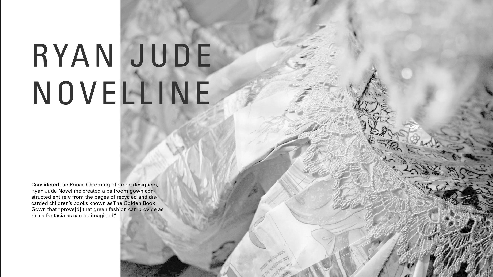
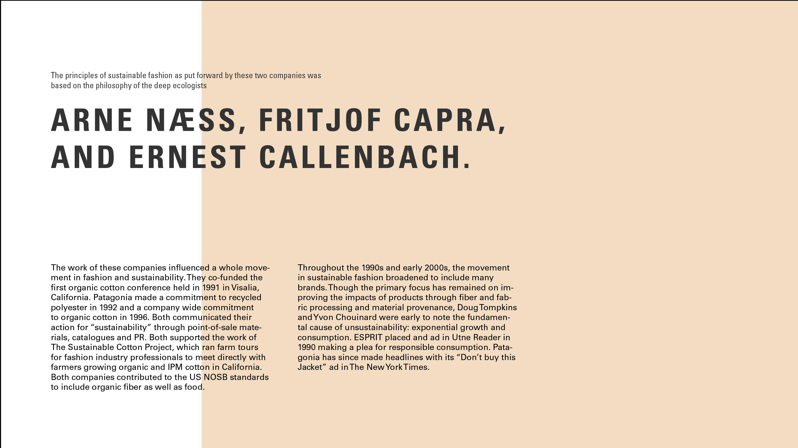
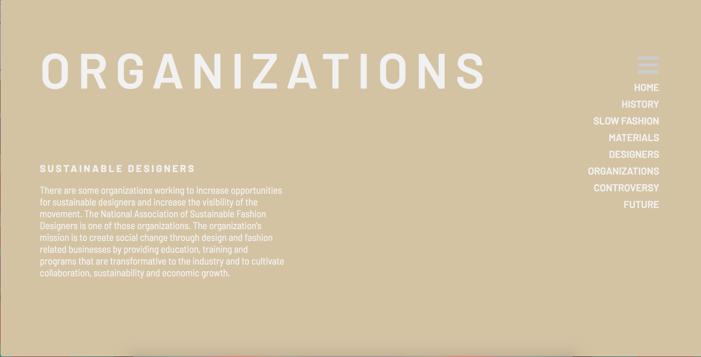
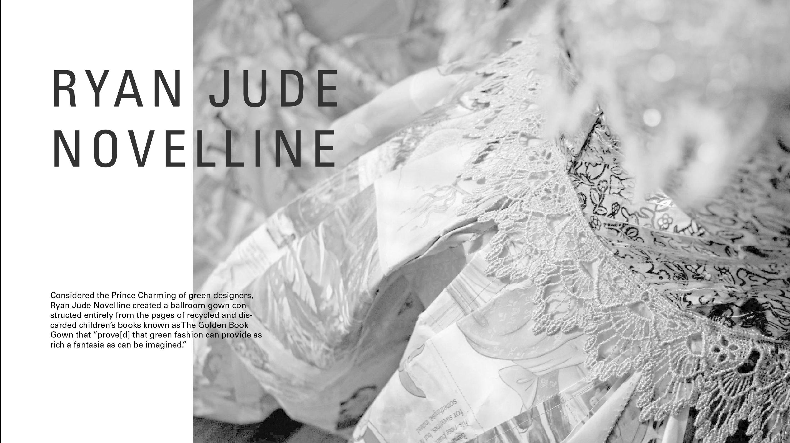
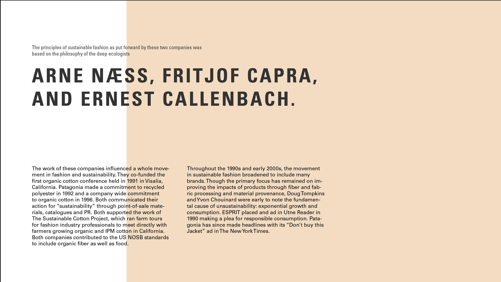

Sustainable Fashion Mockups
- Layouts will be pretty similar on each page, with a header/introduction that takes up the screen, and then the information follows underneath
- The three bars will be the navigation, and will show all the links when the user hovers over it (like in the second image)
- will follow a mostly earth-tone color palette, maybe add in more greens?
- Q: what should the balance be between images and solid colors?
- Q: are there any specific points I should call out on each page?
 




